For iPhone
A feed of mental-math puzzles you can swipe like a timeline. Tap a card and it gives you the answer, and then the shortcut that gets you there without a pen.
An answer on its own teaches you nothing. Every card names the shortcut behind it, then opens onto the worked steps one at a time, plus a short explanation of why the shortcut is allowed at all.
48 × 25
1,200
Quarter of a hundredBreak the tens. Anchor at 50. Build it from 10%. Pay the complement. Take the gap out first. Numeos names each one as it uses it, so the method is what you keep, not the particular numbers.
Nine cards, then a quick three-option test on one of the nine you have just read. Being asked about something you have just seen is the point: a fresh question would only measure what you already knew. The wrong options are near-misses built by nudging the real answer, so there is not much in guessing.
Numeos has no list of questions to run out of. Every card is generated at the moment you reach it, which is also why none of it needs a network.
58
Across ten topics, generated fresh. Scroll back and the cards are where you left them; tomorrow brings a new set.
✈
The feed, Practice, your saved cards, your streak and your numbers all run on the device with no network at all.
10→50
A test pays 10 points at Gentle, up to 50 at Expert, and answering quickly earns up to that much again. Bronze to Diamond.
0
No sign-up wall, no email to confirm, nothing to skip past on first launch. Never sign in and nothing ever leaves the phone.
Captured from the app running on an iPhone. Nothing here is a mockup.
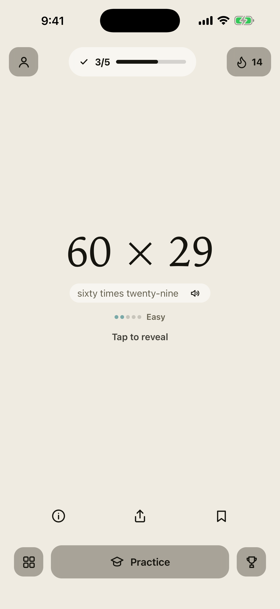
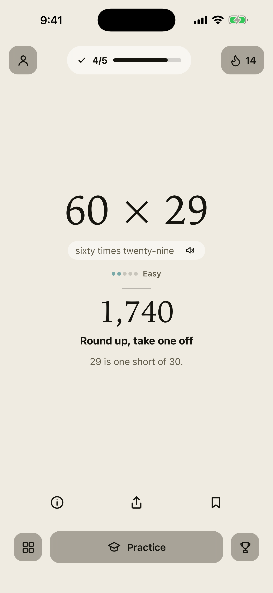
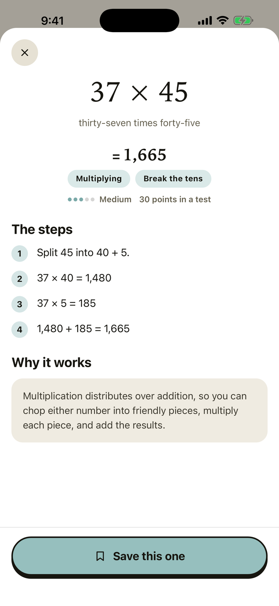
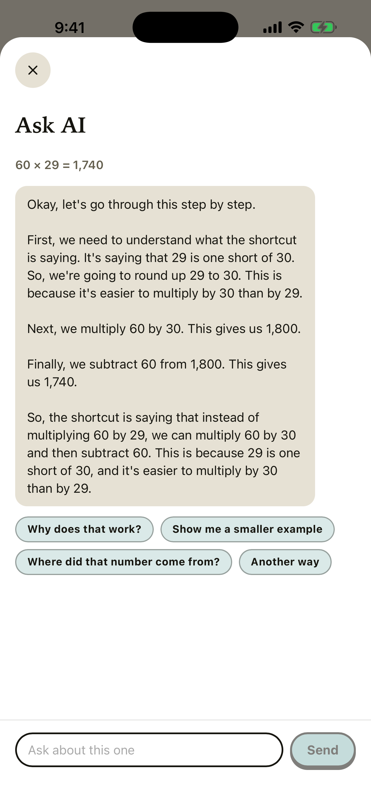
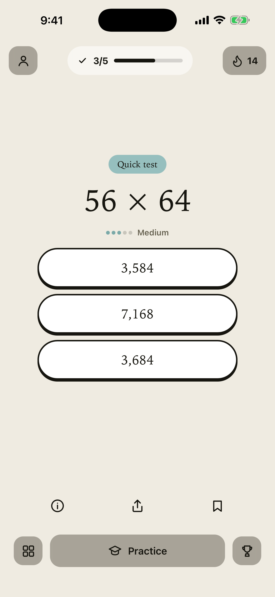
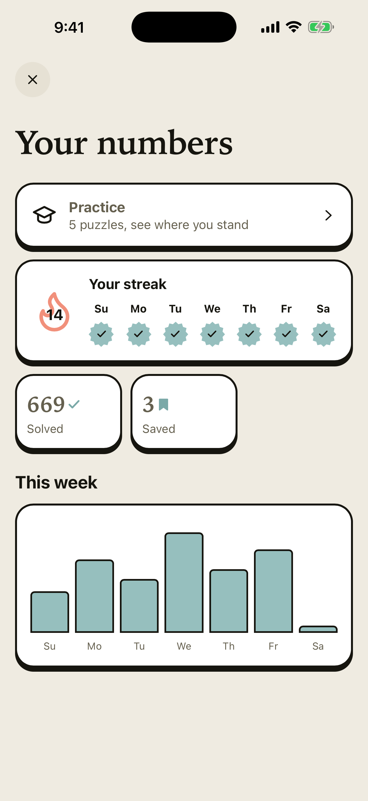
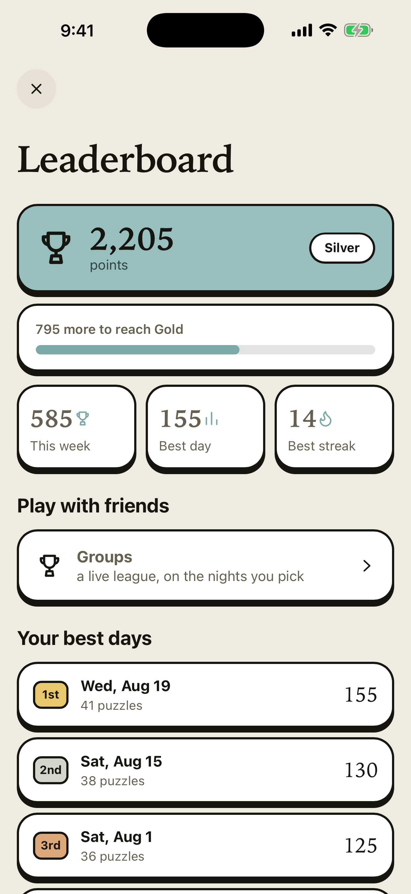
The same feed reads differently in different hands. A card takes half a minute, so it fits wherever half a minute happens to be.
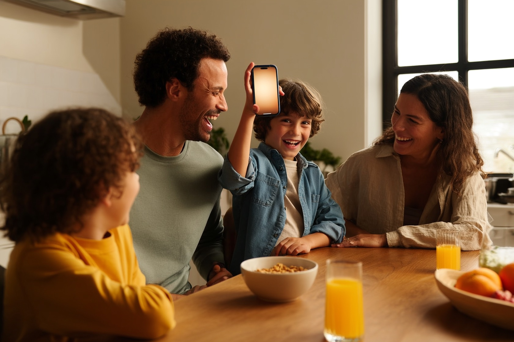
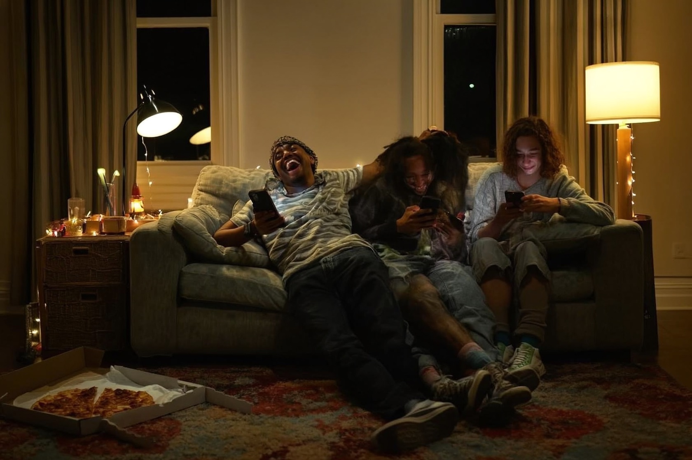
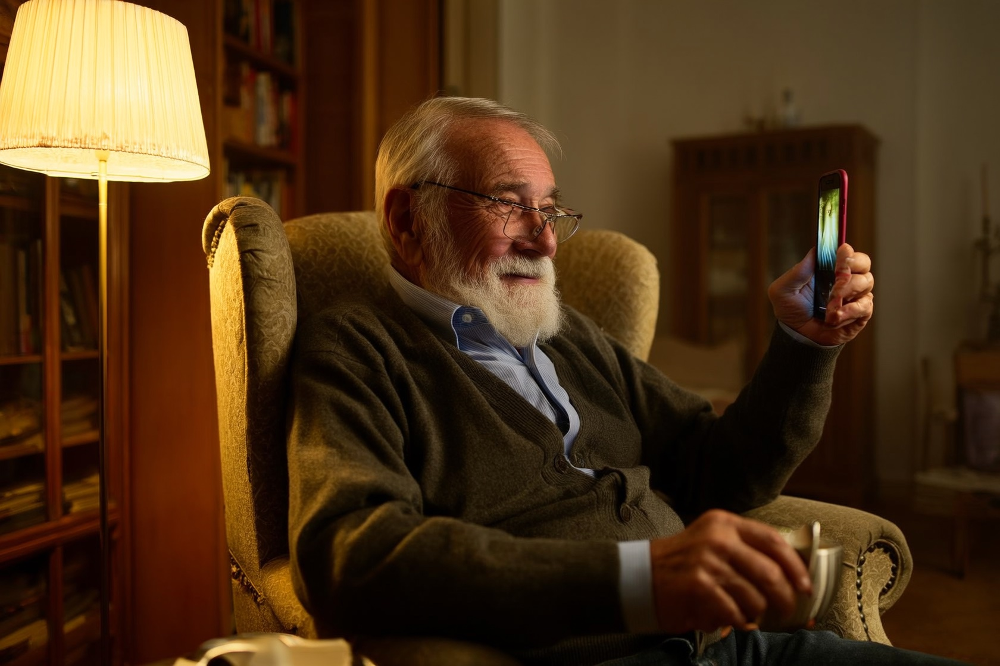
These scenes are rendered, not photographed. The screenshots above are the real thing.
Groups: up to thirty people behind a six-character code, playing a season of ten live matches. Whoever starts the group picks the night, the hour, how often it comes round (every day, every week or every month) and the difficulty, from elementary to Fields Medal. Ten questions served one at a time, with the table moving while you watch, and a lobby to talk in before the first question; nothing said there is ever stored. Entirely optional, the rest of the app never asks about it.
Live at the hour your group chose, in your group's time zoneFollow all ten, or narrow it to the one you want to get good at.
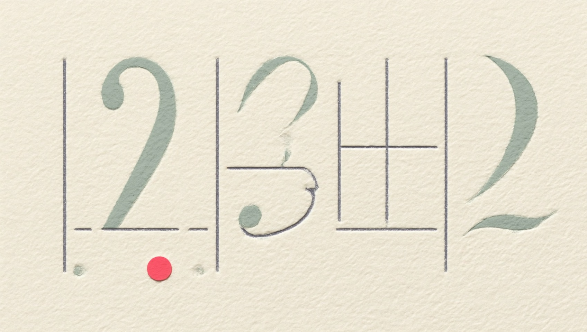
No adverts. No analytics.
No tracking. No account required.